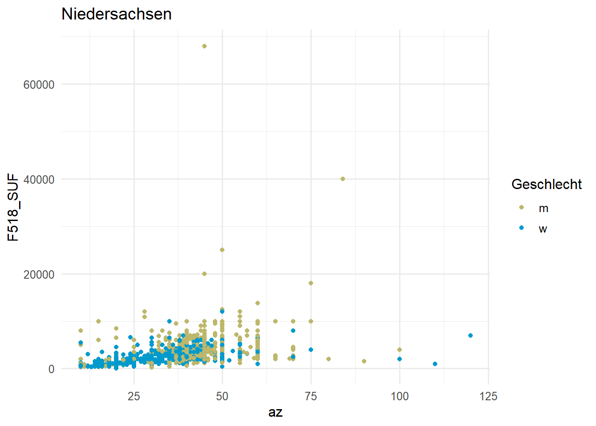

etb_k12 <- haven::read_dta("./data/BIBBBAuA_2018_suf1.0.dta",
col_select = c("S1","F518_SUF","m1202","az","zpalter","F1605e","Bula")) %>%
filter(F518_SUF < 99998, m1202 %in% 1:4, zpalter < 9999 ) %>%
mutate(m1202_fct = factor(m1202, levels = 1:4, labels = c("ohne","dual/schul.","Aufst.","FH/Uni")),
S1_fct = factor(S1,levels = 1:2,labels =c("m","w")))12 Schleifen & Funktionen
Schleifen im Sinne von for()-Loops werden in R selten verwendet. Stattdessen werden meist Funktionen function(...) mit Hilfe von map() aus {purrr}/{tidyverse} 1 über eine Reihe von Werten geschleift.
Die grundlegende Idee ist zunächst die gleiche wie bei klassischen for()-Loops:
- wir legen fest, was gemacht werden soll (in einer
function()) - wir erstellen eine Serie an Werten
- und wenden die
function()auf diese an
Grundsätzlich können wir in R solche Schleife auf wirklich alles anwenden: data.frames(), Vektoren, lists. Das macht das Vorgehen sehr flexibel und kann uns beispielsweise helfen, eine Modellserie zu erstellen.
12.1 Verschiedene Modelle auf die gleichen Daten als function() mit map() anwenden
Wir möchten folgende Modelle alls auf Basis der ETB2018 schätzen:
- Modell 1 =
F518_SUF ~ az - Modell 2 =
F518_SUF ~ az + S1_fct - Modell 3 =
F518_SUF ~ az + S1_fct + m1202_fct - Modell 4 =
F518_SUF ~ az + S1_fct + m1202_fct + zpalter
Natürlich würde so etwas funktionieren, würde aber vier separate Modelle erstellen:
mod1 <- lm(F518_SUF ~ az, data = etb_k12)
mod2 <- lm(F518_SUF ~ az + S1, data = etb_k12)
mod3 <- lm(F518_SUF ~ az + S1 + m1202, data = etb_k12)
mod4 <- lm(F518_SUF ~ az + S1 + m1202 + zpalter, data = etb_k12)Wir definieren dann eine function(), in der wir angeben, dass das angegebene Argument die Formel für ein lm() sein soll - das Ergebnis dieses lm() lassen wir uns dann ausgeben.
mod_function <- function(modx){
mx <- lm(formula = modx,data = etb_k12)
return(mx)
}Als Test können wir mod_function() jetzt einmal verwenden:
mod_function("F518_SUF ~ az") %>% summary() # sieht gut aus
Call:
lm(formula = modx, data = etb_k12)
Residuals:
Min 1Q Median 3Q Max
-10480 -1213 -411 504 67266
Coefficients:
Estimate Std. Error t value Pr(>|t|)
(Intercept) -371.260 89.299 -4.157 3.23e-05 ***
az 102.097 2.234 45.711 < 2e-16 ***
---
Signif. codes: 0 '***' 0.001 '**' 0.01 '*' 0.05 '.' 0.1 ' ' 1
Residual standard error: 3334 on 16519 degrees of freedom
Multiple R-squared: 0.1123, Adjusted R-squared: 0.1122
F-statistic: 2090 on 1 and 16519 DF, p-value: < 2.2e-16Im nächsten Schritt erstellen wir jetzt einen Vektor mit verschiedenen Modellvarianten:
mdls <- c(
"Modell 1" = "F518_SUF ~ az",
"Modell 2" = "F518_SUF ~ az + S1_fct",
"Modell 3" = "F518_SUF ~ az + S1_fct + m1202_fct",
"Modell 4" = "F518_SUF ~ az + S1_fct + m1202_fct + zpalter"
)mdls Modell 1
"F518_SUF ~ az"
Modell 2
"F518_SUF ~ az + S1_fct"
Modell 3
"F518_SUF ~ az + S1_fct + m1202_fct"
Modell 4
"F518_SUF ~ az + S1_fct + m1202_fct + zpalter" Mit map wenden wir unsere mod_function jetzt auf den Modell-Vektor an:
mods <- map(mdls,mod_function)
mods$`Modell 1`
Call:
lm(formula = modx, data = etb_k12)
Coefficients:
(Intercept) az
-371.3 102.1 mods$`Modell 2`
Call:
lm(formula = modx, data = etb_k12)
Coefficients:
(Intercept) az S1_fctw
359.51 91.73 -683.55 Außerdem können wir uns alle Modelle auch direkt in modelsummary ausgeben lassen:
library(modelsummary)Warning: Paket 'modelsummary' wurde unter R Version 4.2.2 erstelltmodelsummary(mods,stars = T,gof_omit = "IC|RM|Log",output = "flextable")
| Modell 1 | Modell 2 | Modell 3 | Modell 4 |
|---|---|---|---|---|
(Intercept) | -371.260*** | 359.515*** | -376.956** | -1447.389*** |
(89.299) | (106.687) | (140.995) | (168.230) | |
az | 102.097*** | 91.733*** | 83.459*** | 84.050*** |
(2.234) | (2.376) | (2.323) | (2.315) | |
S1_fctw | -683.549*** | -725.557*** | -755.562*** | |
(55.184) | (53.640) | (53.490) | ||
m1202_fctdual/schul. | 384.063*** | 261.336* | ||
(114.479) | (114.515) | |||
m1202_fctAufst. | 898.222*** | 736.807*** | ||
(137.668) | (137.828) | |||
m1202_fctFH/Uni | 2074.480*** | 1932.662*** | ||
(115.946) | (116.133) | |||
zpalter | 25.414*** | |||
(2.199) | ||||
Num.Obs. | 16521 | 16521 | 16521 | 16521 |
R2 | 0.112 | 0.120 | 0.174 | 0.181 |
R2 Adj. | 0.112 | 0.120 | 0.174 | 0.180 |
F | 2089.519 | 1131.116 | 696.152 | 607.040 |
+ p < 0.1, * p < 0.05, ** p < 0.01, *** p < 0.001 | ||||
12.1.1 Übung
12.2 Das gleiche Modell auf verschiedene Datensets anwenden
Der zweite Fall ist das gleiche Modell auf verschiedene Datensätze anzuwenden - wer kennt es nicht:
“Habt ihr das auch mal getrennt für Ost/West gerechnet?”
…dafür hilft uns nest(.by =) - damit können wir den Datensatz entlang einer Variable splitten und zusammenfassen:
etb_k12_ow <-
etb_k12 %>%
mutate(east = ifelse(Bula > 10,"east","west")) %>% # Berlin = east
nest(.by=east)
etb_k12_ow# A tibble: 2 × 2
east data
<chr> <list>
1 east <tibble [3,438 × 9]>
2 west <tibble [13,083 × 9]>In der Spalte data sind jetzt also die Datensätze für Ost und West enthalten:
head(etb_k12_ow$data[[1]],n=3)# A tibble: 3 × 9
az zpalter Bula S1 F518_…¹ F1605e m1202 m1202…² S1_fct
<dbl> <dbl+lbl> <dbl+lbl> <dbl+lbl> <dbl+l> <dbl+l> <dbl+l> <fct> <fct>
1 30 51 11 [Berlin] 2 [weiblic… 1200 1 [ja] 2 [dua… dual/s… w
2 40 49 11 [Berlin] 1 [männlic… 3500 2 [nei… 4 [Fac… FH/Uni m
3 40 63 11 [Berlin] 2 [weiblic… 4500 1 [ja] 4 [Fac… FH/Uni w
# … with abbreviated variable names ¹F518_SUF, ²m1202_fcthead(etb_k12_ow$data[[2]],n=3)# A tibble: 3 × 9
az zpalter Bula S1 F518_…¹ F1605e m1202 m1202…² S1_fct
<dbl> <dbl+lbl> <dbl+lbl> <dbl+l> <dbl+l> <dbl+lb> <dbl+l> <fct> <fct>
1 40 24 1 [Schleswig-… 1 [män… 2500 2 [nei… 2 [dua… dual/s… m
2 30 53 1 [Schleswig-… 2 [wei… 3500 1 [ja] 4 [Fac… FH/Uni w
3 45 29 1 [Schleswig-… 1 [män… 2740 NA 2 [dua… dual/s… m
# … with abbreviated variable names ¹F518_SUF, ²m1202_fctAuf den so gesplitteten Datensatz können wir mit map() ein lm()-Modell anwenden:
mod_ow <-
etb_k12 %>%
mutate(east = ifelse(Bula > 10,"east","west")) %>% # Berlin = east
nest(.by = east) %>%
mutate(model = map(data, function(data) {
lm("F518_SUF ~ az + m1202_fct + zpalter + S1_fct", data = data) # ad-hoc function --> siehe tip)
}))
adhoc
function
Wir können die Funktion auch im gleichen Zug wie map() definieren, indem wir einfach mit {} die function() anhängen:
map(input, function(x) {
... # letzter Schritt in function wird das Ergebnis ausgegeben
})Das Ergebnis ist ein data.frame/tibble, welcher in der Spalte model die lm-Objekte enthält:
mod_ow# A tibble: 2 × 3
east data model
<chr> <list> <list>
1 east <tibble [3,438 × 9]> <lm>
2 west <tibble [13,083 × 9]> <lm> mod_ow$model[1][[1]]
Call:
lm(formula = "F518_SUF ~ az + m1202_fct + zpalter + S1_fct",
data = data)
Coefficients:
(Intercept) az m1202_fctdual/schul.
-509.07 71.90 -345.51
m1202_fctAufst. m1202_fctFH/Uni zpalter
-75.82 1294.03 12.27
S1_fctw
-399.58 modelsummary::modelplot(mod_ow$model,coef_omit = "Intercept") +
geom_vline(aes(xintercept = 0), linetype = 2, alpha = .5) +
scale_color_manual(values = c("orange","navy")) modelsummary(mod_ow$model,stars = T,gof_omit = "IC|RM|Log",output = "flextable")
| (1) | (2) |
|---|---|---|
(Intercept) | -509.068 | -1731.303*** |
(380.613) | (187.221) | |
az | 71.902*** | 88.157*** |
(5.374) | (2.562) | |
m1202_fctdual/schul. | -345.508 | 425.407*** |
(283.463) | (124.716) | |
m1202_fctAufst. | -75.817 | 936.694*** |
(329.344) | (151.324) | |
m1202_fctFH/Uni | 1294.027*** | 2097.328*** |
(287.443) | (126.477) | |
zpalter | 12.272** | 28.938*** |
(4.720) | (2.468) | |
S1_fctw | -399.585*** | -830.732*** |
(110.121) | (60.787) | |
Num.Obs. | 3438 | 13083 |
R2 | 0.124 | 0.201 |
R2 Adj. | 0.122 | 0.201 |
+ p < 0.1, * p < 0.05, ** p < 0.01, *** p < 0.001 | ||
12.2.1 Übung
12.3 if und mehrere Argumente in function()
Wir können unsere function() auch weitere Argumente aufnehmen und auch if-Statements2 einbauen.
Wir könnten beispielsweise noch einen zusätzlichen Schritt in unsere Modell-function() einbauen, welcher tidy() auf das Modell anwendet und eine vereinfachte Regressionstabelle als data.frame erstellt.
mod_function2 <- function(modx){
mx <- lm(formula = modx,data = etb_k12)
mx <- tidy(mx,conf.int = T)
return(mx)
}
mod_function2("F518_SUF ~ az")# A tibble: 2 × 7
term estimate std.error statistic p.value conf.low conf.high
<chr> <dbl> <dbl> <dbl> <dbl> <dbl> <dbl>
1 (Intercept) -371. 89.3 -4.16 0.0000323 -546. -196.
2 az 102. 2.23 45.7 0 97.7 106.Wenn wir jetzt über ein zweites Argument bestimmen wollen, ob der Schritt mit tidy() ausgeführt werden soll, hilft uns ein zweites Argument in function():
mod_function3 <- function(modx, dotidy){
mx <- lm(formula = modx,data = etb_k12)
if(dotidy == T) mx <- tidy(mx,conf.int = T)
return(mx)
}
mod_function3("F518_SUF ~ az",dotidy=T)# A tibble: 2 × 7
term estimate std.error statistic p.value conf.low conf.high
<chr> <dbl> <dbl> <dbl> <dbl> <dbl> <dbl>
1 (Intercept) -371. 89.3 -4.16 0.0000323 -546. -196.
2 az 102. 2.23 45.7 0 97.7 106.mod_function3("F518_SUF ~ az",dotidy=F)
Call:
lm(formula = modx, data = etb_k12)
Coefficients:
(Intercept) az
-371.3 102.1 Wenn wir einen Standardwert für ein Argument vergeben möchten, dann können wir das mit = angeben.
mod_function4 <- function(modx, dotidy = T){
mx <- lm(formula = modx,data = etb_k12)
if(dotidy == T) mx <- tidy(mx,conf.int = T)
return(mx)
}
mod_function4("F518_SUF ~ az")# A tibble: 2 × 7
term estimate std.error statistic p.value conf.low conf.high
<chr> <dbl> <dbl> <dbl> <dbl> <dbl> <dbl>
1 (Intercept) -371. 89.3 -4.16 0.0000323 -546. -196.
2 az 102. 2.23 45.7 0 97.7 106.mod_function4("F518_SUF ~ az",dotidy=F)
Call:
lm(formula = modx, data = etb_k12)
Coefficients:
(Intercept) az
-371.3 102.1 12.4 Übungen
12.4.1 Übung 1
etb_ue12 <-
haven::read_dta("./data/BIBBBAuA_2018_suf1.0.dta",
col_select = c("S1","F518_SUF","m1202","az","zpalter","F1605e")) %>%
filter(F518_SUF < 99998, m1202 %in% 1:4, zpalter < 9999 ) %>% # missings raus
mutate(m1202_fct = factor(m1202, levels = 1:4, labels = c("ohne","dual/schul.","Aufst.","FH/Uni")),
S1_fct = factor(S1,levels = 1:2,labels =c("m","w"))) %>% # factor setzen
haven::zap_labels() %>% # labels rauswerfen um Probleme zu vermeiden
haven::zap_label()Erstellen Sie eine Funktion, welche den
data.frameetb_ue12für einlm()verwendet und als Input eine Modellformel verwendet. Testen Sie Ihre Funktion mit folgender Formel:
az ~ S1 + ausb + zpalter(Denken Sie daran, die Formula in""zu setzen).Erstellen Sie eine Liste mit folgenden Modellen:
- Modell 1
"az ~ S1", - Modell 2
"az ~ S1 + m1202_fct", - Modell 3
"az ~ S1 + m1202_fct + zpalter"
- Modell 1
Verwenden Sie
map()und die erstellte Funktion, um die Modelle zu schätzen und inmodelsummary()anzuzeigen
12.4.2 Übung 2
Berechnen Sie das Modell "az ~ m1202_fct + zpalter + I(zpalter^2)" getrennt für Männer und Frauen S1_fct.
12.5 Mehr zu map()
12.6 Anhang
12.6.1 .x in map()
Im {tidyverse} stellt das Paket {purrr} map() zur Verfügung, das function(x) { ... x} auf ~ und .x abkürzen lässt:
mods <- map(mdls,~lm(formula = .x,data = etb_k12))Wer mehr über {purrr} und map() erfahren möchte, findet hier eine hervorragende Einführung.
12.6.2 weitere Beispiele für function()
12.6.2.1 alle Datensätze aus einem Verzeichnis einzulesen
# Namen aller csv-Dateien aus einem Verzeichnis
files <- list.files(path = "/pfad/...", pattern = ".csv$",full.names = T)
daten_list <-
map(files, function(x){
read.csv(x,header = T,sep = ";")
})12.6.2.2 Grafiken für unterschiedliche Jahre/Untergruppen zu erstellen
plots_nach_Bula <-
map(1:16, function(bl){
plot_data <- etb_k12 %>% filter(Bula == bl) # daten für Bundesland auswählen
title_var <- as_factor(unique(plot_data$Bula)) # Titel aus Bula-Variable
# eigentlicher plot
plot_data %>%
ggplot(aes(x=az,y=F518_SUF, color = S1_fct)) +
geom_point(size = 1.5) +
scale_color_manual(values = c("darkkhaki","deepskyblue3")) +
labs(title = title_var, color = "Geschlecht") +
theme_minimal(base_size = 12)
})
plots_nach_Bula[[3]]
plots_nach_Bula[[12]]
12.6.3 Loop mit for
for(i in 1:8){
print(i)
}[1] 1
[1] 2
[1] 3
[1] 4
[1] 5
[1] 6
[1] 7
[1] 812.6.4 loop über Variablen
Möchten wir über Variablen loopen, müssen wir R explizit mitteilen, dass die mitgegebenen strings als Variablen zu verstehen sind:
for(v in c("m1202_fct","S1","F1605e")){
etb_k12 %>% count(v) %>% print()
}Error in `count()`:
! Must group by variables found in `.data`.
✖ Column `v` is not found.Das können wir mit !!rlang::sym(v):
for(v in c("m1202_fct","S1","F1605e")){
etb_k12 %>% count(!!rlang::sym(v)) %>% print()
}# A tibble: 4 × 2
m1202_fct n
<fct> <int>
1 ohne 886
2 dual/schul. 7679
3 Aufst. 1460
4 FH/Uni 6496
# A tibble: 2 × 2
S1 n
<dbl+lbl> <int>
1 1 [männlich] 8442
2 2 [weiblich] 8079
# A tibble: 4 × 2
F1605e n
<dbl+lbl> <int>
1 1 [ja] 7104
2 2 [nein] 3970
3 9 [keine Angabe] 43
4 NA 5404